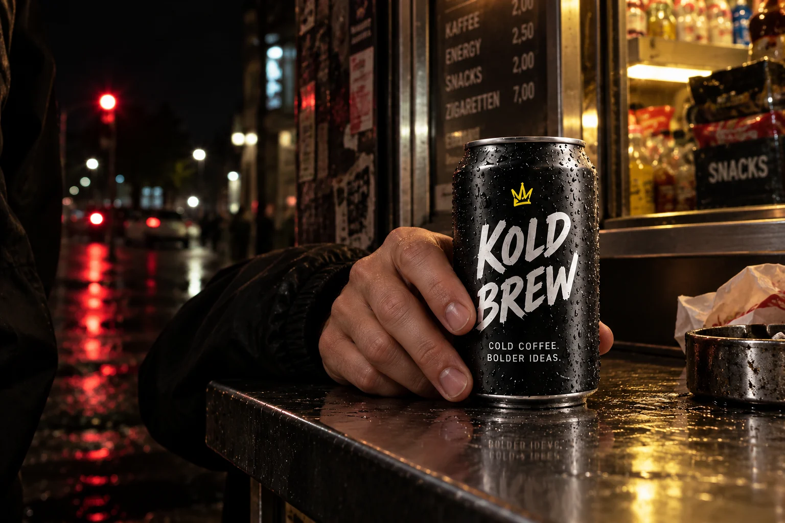
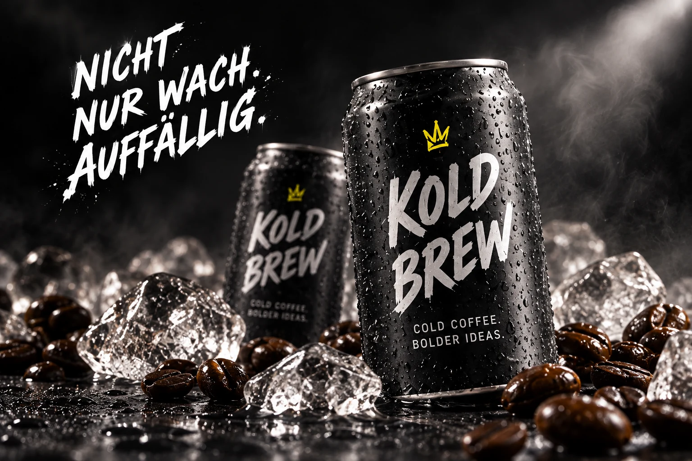
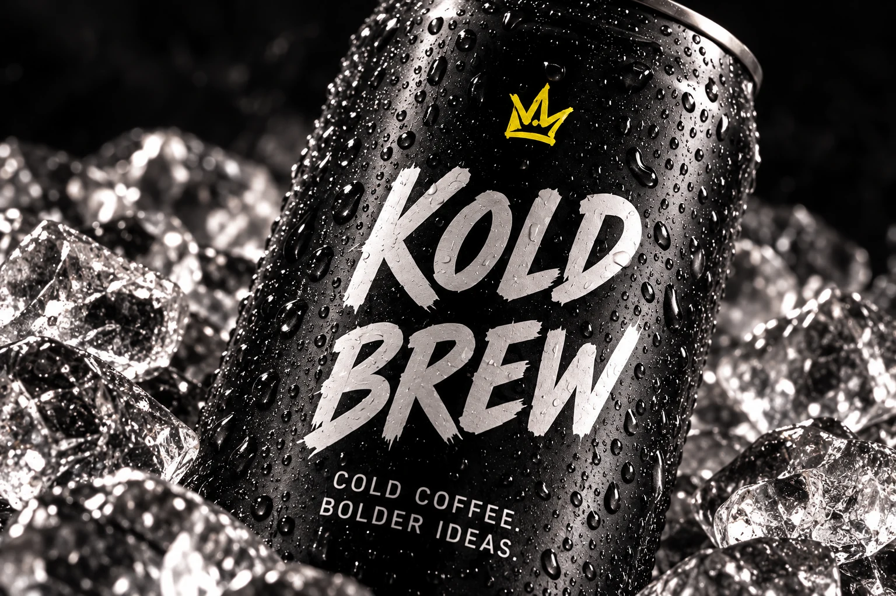

Branding · Campaign · Digital
KOLD BREW
Eine Krone für die Nacht.Die Idee
Kalt gebraut.
Hellwach gedacht.
Kaffee für die Stunden, in denen andere schon Schluss machen. Eine Marke zwischen nächtlichem Kiosk, kaltem Asphalt und dem ersten guten Gedanken.
Die Aufgabe
Cold Brew aus der Nische holen. Ohne Barista-Erklärstunde, dafür mit einer klaren Haltung und einer Dose, die auch aus fünf Metern noch auffällt.
Der Gedanke
Schwarz wie die Nacht. Eine gelbe Krone. Zwei Wörter, die auf der Dose genauso sitzen wie auf einer Häuserwand. KOLD BREW macht Wachsein zum gemeinsamen Nenner.
Die Umsetzung
Identität, Packaging, Kampagnenmotive und eine digitale Launch-Strecke. Als zusammenhängendes Markenkonzept entwickelt.

DEINE NACHT.
DEINE KRONE.
KOLD BREW / Bewegungsstudie



DEINE NACHT.
DEINE KRONE.
DAHINTER
STECKT TEAM.
Freie Konzeptarbeit · 2026 · Keine echte Kundenkampagne.